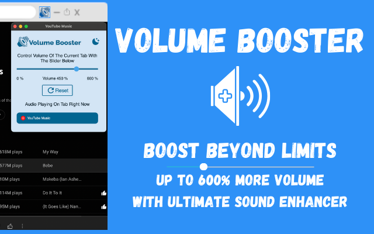

In the realm of digital media, sound quality is paramount. Whether we're engrossed in a captivating video, grooving to our favorite tracks, or tuning into a thought-provoking podcast, pristine audio is crucial for a truly immersive experience. Unfortunately, subpar sound can quickly diminish this enjoyment. Introducing Volume Booster, the game-changing browser extension designed to elevate your audio experience. Moreover, by enhancing sound quality and amplifying volume by an astounding 600%, Volume Booster transforms how you consume online content. Let's embark on a journey of auditory excellence and discover how this innovative tool can redefine your digital listening experience.
